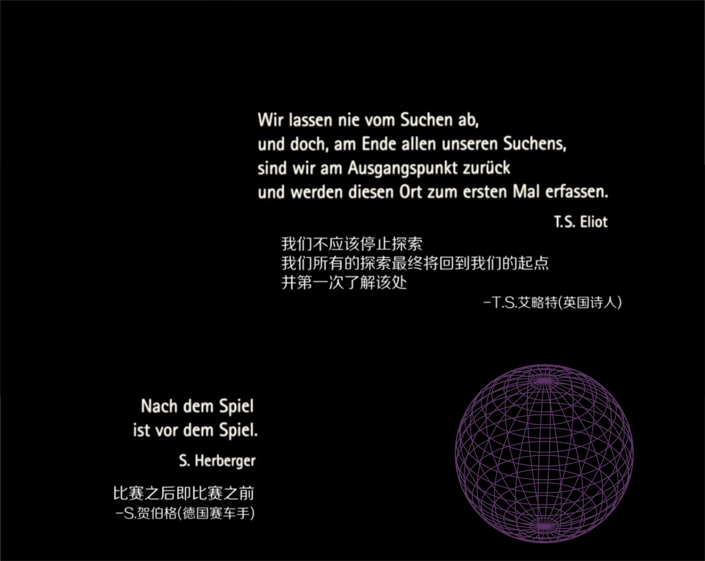

Lola rennt

基本信息
警告：
以下文字涉及剧情描述，不建议在观影前阅读。
仔细想想，好像还从来没有上过德国影片的。主要是因为自己也没看过几部，印象中就看过一部《帝国的毁灭》，某站上曾看到有人拿它做了剪辑还配了《止战之殇》的背景音乐，整体效果很是不错。还有一部是《柏林苍穹下》。巧了，主演还都是同一个人，都是饰演元首的那个演员。我猜想是不是德国人民热衷于制造业，制造各种各样的工业品，下了班就喝喝啤酒，看看足球，对于文艺应该是没多大兴趣的。据我所知隔壁的法国人倒是热衷于此。我随随便便就能数出一大堆德国工业品牌，卡尔蔡司的光学镜头、森海塞尔的高保真耳机、阿迪达斯的运动品牌、西门子电器，欧司朗的光电、宝马奔驰大众博世的名车、英飞凌半导体等等。
万万没有想到的是，事隔这么多年以后，纳粹元首逃过了国际法庭审判，却没逃得过上海人的手心，他被上海人从土里刨出来，为推广上海闲话做出了巨大的贡献。

跑题了。
不过你从片头就不难看出，那样一股浓重的金属味，沉甸甸，硬邦邦地从屏幕里扑面而来。影片开篇便甩出了几个哲学问题，我们是谁？我们来自何处？又将去向何方？使得我丝毫不会怀疑，这个国度不仅工业发达，也曾经盛产过众多的哲学家——康德、费希特、谢林、黑格尔和费尔巴哈、叔本华还有伟大的马克思与战友恩格斯等。当银行保安大哥大脚开出手中的足球，一场类似于足球赛一般长达几十分钟的奔跑从此开始。
事情的起因，是因为女友罗拉去商店买烟时摩托车被盗，而导致无法按时接男友曼尼回程。由于当时在荒郊野外，连电话亭都没有，他便只能去坐地铁。而在坐地铁途中把装满现金的纸袋子落在了座位上被乞丐捡到，于是就有了两人开头通电话的场景。
留给中国队他们的时间已经不多了，需要在中午十二点之前弄到十万马克补缺。否则，冯导就领着斧头帮的弟兄们砍过来了。否则，黑帮老大就要执行家法了。你说这还有王法吗？还有法律吗？
三个代表的不同人生碎片
推婴儿车的妇人、 骑自行车的小哥、 银行的女职员其实从影片一开始就登场了，但是就像路人甲乙丙丁，大部分人不会注意他们的存在，他们就是芸芸众生的普通一员。可每当罗拉在奔跑中与他们发生交集，便会使得他们产生一系列的人生快照。每一份人生快照在不同的奔跑时刻有着不同的过程与结局。我们去过哪里，做过什么事情，遇见过什么人都随着我们选择的改变而发生改变。正是由于这种不确定性，才让人生有了更多的可能，但伴随而来的也有了更多的风险，正如我们当下所处的时代。很遗憾，我想说父辈们所期待的那种安稳其实早就消失了，即便有，也如濒临绝迹的珍稀动物一般罕见，变得更加难以捕捉。迎接风浪才是常态。
三段奋力的奔跑
解决问题的根本方法是从乞丐那里把丢掉的钱袋子拿回来。可是找人犹如大海捞针，于是在平行宇宙中（如果有的话）他们走了两次弯路，一次选择抢超市，一次抢银行，结局都不好。罗拉两次奔跑与乞丐擦肩而过，但却不相识。是命运的安排也好，还是前世的因缘也好。头一次的奔跑，罗拉得知了自己的父亲出轨，并且自己也不是亲生的。确实，他们父女俩连发色都不一样呢。每当看到那一头红发，不知为何我的心里就响起了那首熟悉的BGM：草原最美的花，火红的萨日朗……第二次奔跑用上了第一次抢超市学会的技能——打开手枪的保险，可以实施绑架。哇呕，看来这是可以存档的平行宇宙呢。
影片的结尾安排了一个皆大欢喜的结局，我个人倒觉得，这其实是个败笔。每个人似乎都得到了自己想要的，只有赌场吃了点亏，然而这恰恰是个败笔。正因为结局太完美了，反而显得特别不真实。乞丐得到了枪，后来又会发生什么？赌场的钱又真的有那么好赢的吗？
不知道之前导演是否研究过中国文化，但即使是败笔，导演也将因果报应的理论发挥到了淋漓尽致，仔细来看其实这最后一段特别有意思。先是罗拉奔跑时，扑到了梅耶先生（罗拉父亲的朋友）的车子上。在前两次奔跑时，也是这个时间点因为看罗拉走了神所以他的车子每次都撞到了另一辆经过的车子上。而这次由于罗拉的打断没撞到，所以梅耶先生比罗拉先到了银行接走了她爸。此时后脚一步跑到银行的罗拉只能眼睁睁看着车子开走，直到此时，她明白是真的从她爸那借不到一个子了。于是她一边跑，一边想着去哪里弄点钱。直到命运把她引向赌场的门口，还差点撞上了一辆大货车。接下来的时间，开始进入戏剧化时刻。罗拉用不到一百马克的本金以小博大（换筹码的小姐还借了几毛钱给她），两把就赢到了十万，还用尖叫声振坏了好多个玻璃杯，最终在众目睽睽之下大摇大摆地离开了赌场（有本事你去澳门这么干试试）。
话分两头，那头曼尼刚挂掉电话，就被靠在电话亭旁边的瞎子阿姨引导着正好看到了买了小哥自行车的乞丐，这边又开始了一路狂奔的追赶。在曼尼追逐乞丐的过程中引发了一起交通事故，那两辆车恰好就是前面因为罗拉而没有撞到一起的车子，其中一辆坐着渣男老爸和朋友梅耶先生，不禁让人感叹天道好轮回啊！追到实在跑不动了，就举起枪让乞丐停下来，而乞丐还真就停下来了？夺过钱后乞丐竟然问曼尼要枪？不知道当时他脑子里到底在想什么，还真的就老老实实把枪给他了。这里看得我是一脑袋的问号，难道乞丐不会拿着枪再把钱袋子要回来吗？从这点看来，看来乞丐绝非背信弃义的小人啊。
最终两人在路口会师，影片结束。会如童话里的结局，从此王子和公主过上了幸福的生活吗？我不知道。但是大概率，会很难。
存在第四种选择
一定会有人问，有没有第四种选择呢？我相信是有的。一个整天混迹黑道谋生的男友，到头来连个现金都守不住，你还能期待他守住什么呢？当一个男人沦落到要靠女友拯救了，你确定你们之间真的有未来么？转身离开恐怕才是最好的选择。第四次的选择可以是挂掉电话，就当一切都没发生。整个影片恐怕也只是一种探索，对于人生的探索或是基于哲学的讨论，因为现实中从来不会先给你两次试错的机会，要么进，要么退。人生没有彩排，每一刻都是直播，有时一步踏错，接下来步步错。你可以提前自己在脑子里演算两遍倒是真的，总不至于一做就错。
那么，影片究竟想要表达什么呢？最终恐怕还得回到片头的引用的两句话。在此不做过多的解读，各位看官自行理解，仁者见仁，智者见智。

上个世纪七十年代末，中国曾经被推到了命运的十字路口，所选择的道路是对还是错，今天我们不去评判也不去盖棺定论，相信后世会有更理性更客观的答案。
如今，二十一世纪的二十年代已经开启，中国又重新站在了命运的十字路口，风云诡谲的世界局势，时隐时现的公共卫生事件，何去何从还需三思而后行。